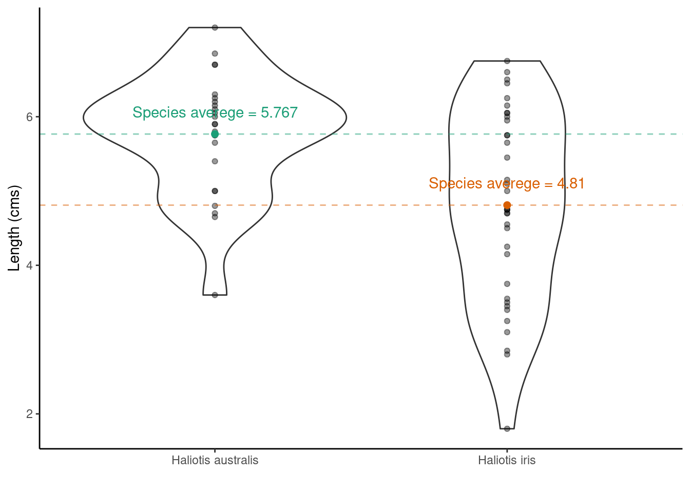

The bootstrap
Recall that the sampling distribution shows us what would happen if we took very many samples under the same conditions. The bootstrap is a procedure for finding the (approximate) sampling distribution from just one sample.
In brief,
- The original sample represents the distribution of the population from which it was drawn.
- Resamples, taken with replacement from the original sample are representative of what we would get from drawing many samples from the population (the distribution of the statistics calculated from each resample is known as the bootstrap distribution of the statistic).
- The bootstrap distribution of a statistic represents that statistic’s sampling distribution.
Example: constructing bootstrap confidence intervals
Old faithful is a gyser located in Yellowstone National Park, Wyoming. Below is a histogram of the durations of 299 consecutive eruptions. Clearly bimodal!
library(tidyverse)
ggplot(data = MASS::geyser, aes(x = duration)) +
geom_histogram() +
xlab("Duration of eruptions (m)")
Step 1: Calculating the observed mean eruption duration time:
## mean
## 1 3.460814Step 2: Construct bootstrap distribution
## Number of times I want to bootstrap
nreps <- 1000
## initialize empty array to hold results
bootstrap_means <- numeric(nreps)
set.seed(1234) ## *****Remove this line for actual analyses*****
## This means that each run with produce the same results and
## agree with the printout that I show.
for (i in 1:nreps) {
## bootstrap. note with replacement
bootstrap_sample <- sample(MASS::geyser$duration, replace = TRUE)
## bootstraped mean resample
bootstrap_means[i] <- mean(bootstrap_sample)
}
## results
results <- data.frame(bootstrap_means = bootstrap_means)
ggplot(data = results, aes(x = bootstrap_means)) +
geom_histogram() +
geom_vline(xintercept = as.numeric(mean)) +
ggtitle("Bootstrap distribution")
Bootstrap estimate of bias is the difference between the mean of the boostrap distribution and the value of the statistic in the original sample:
## [1] 0.001200111Bootstrap standard error of a statistic is the standard deviation of its bootstrap distribution:
## [1] 0.06740607## compare to SEM of original data
MASS::geyser %>%
summarise(sem = sd(duration)/sqrt(length(duration)))## sem
## 1 0.06638498Bootstrap \(t\) confidence interval. If, for a sample of size \(n\) the boostrap distribution is approximately Normal and the estimate of bias is small then an approximate \(C\) confidence for the parameter corresponding to the statistic is: \[\text{statistic} \pm t^* \text{SE}_\text{bootstrap}\] where \(t*\) is the critical value of the \(t_{n-1}\) distribution with area \(C\) between \(-t^*\) and \(t^*\). For \(C = 0.95\):
## [1] 3.328162 3.593466So our 95% confidence interval is 3.3 to 3.6.
Bootstrap \(percentile\) confidence interval. Use the bootstrap distribution itself to determine the limits of the confidence interval by taking the limits of the sorted, central \(C\) bulk of the distribution. For \(C = 0.95\):
## [1] 3.328428 3.591081Differences
In summary, what is resampling?
Any of a variety of methods for doing one of the following
- Estimating the precision of sample statistics (e.g., bootstrapping)
- Performing significance tests (e.g., permutation/exact/randomisation tests)
- Validating models (e.g., bootstrapping, cross validation)
Permutation vs bootstrap test
The permutation test exploits symmetry under the null hypothesis.
A full permutation test p-value is exact, conditional on data values in the combined sample.
A bootstrap estimates the probability mechanism that generated the samples under the null hypothesis.
A bootstrap does not require any special symmetry or assumption or exchangability.